[1] 4640 4567 4592 3869 2631 1848 1090 -239 -1731 -3085 -4311Audio
Dr. Josef Fruehwald
The Upshot
Recording sound and doing acoustic analysis is all about managing trade offs.
Sound
From space:
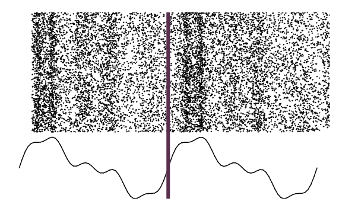
Sound
To time:
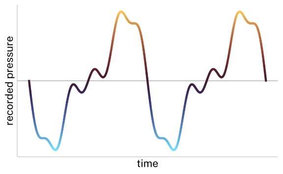
Analog Audio
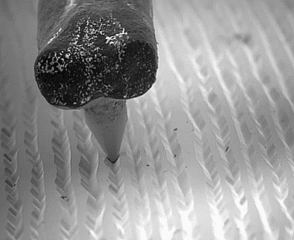
Analog Audio
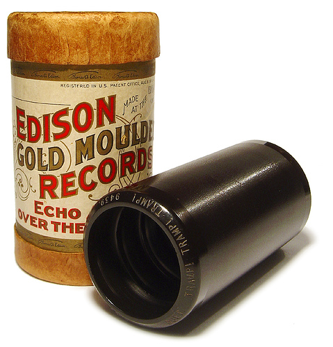
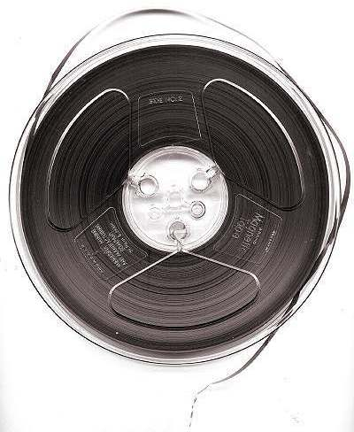
Analog Audio
Digital Audio
Instead of etching continuous grooves, we can note down a sequence of high and low pressure values.
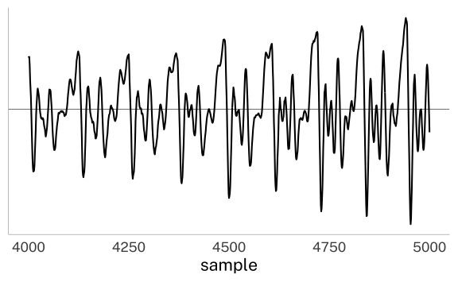
Digital Audio
Let’s say we decide to note down that the air pressure at the first moment in the recording was -194.
When do we decide that the second moment is, to write down the second air pressure?
Time doesn’t come in discrete moments.
Digital Audio
Sampling rate
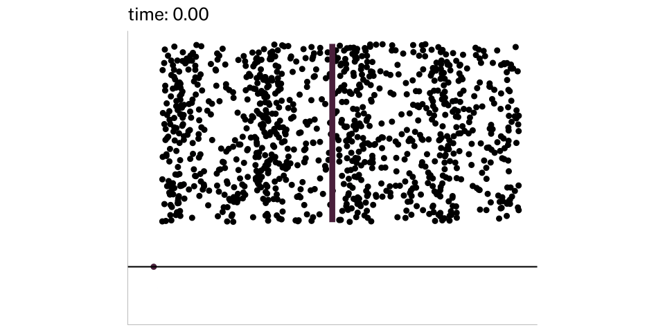
Sampling Rate
Described in Hz.
16,000 Hz sampling rate = 16,000 samples per second
Sampling Rate
Common Sampling rates
| Rate | Context |
|---|---|
| 8,000 Hz | The sampling rate on telephones. |
| 16,000 Hz | Commonly used in speech processing. |
| 44,100 Hz | Standard sampling rate for MP3s |
| 48,000 Hz | Standard sampling rate for professional digital recording |
Sampling Rate
You can record sound frequencies up to \(\frac{1}{2}\) the sampling rate (the Nyquist Frequency).
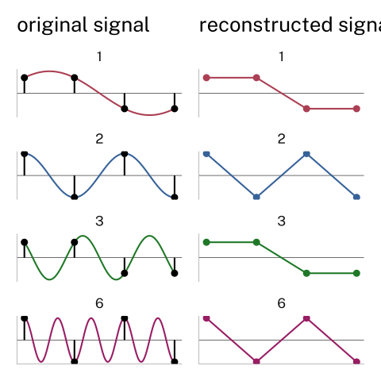
Bit Rate
Computers can only record numbers with finite precision.
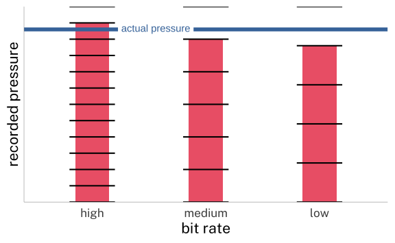
Sample and Bit Rate
Why not always max out sampling rate and bit rate?
Precision & File Size
- Duration
-
0.89s
- Sampling Rate
-
44100 Hz
- File Size
-
77.1K
- If it was 1 hour
- 305M
- Duration
-
0.89s
- Sampling Rate
-
16000 Hz
- File Size
-
28K
- If it was 1 hour
- 111M
What’s really necessary?
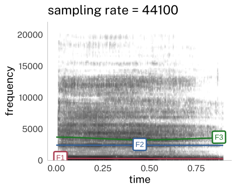
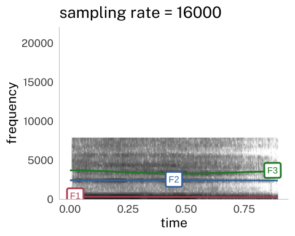
Acoustic analysis
Let’s say you’ve decided on a sampling rate, and now you want to estimate the fundamental frequency.
At a single point in time, we have a single sample. At what frequency is the signal alternating?
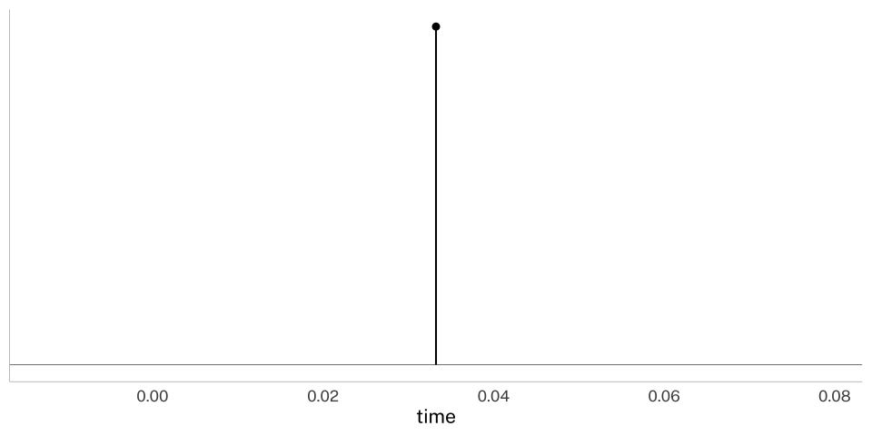
Acoustic Analysis
Ok, here’s 10 points.
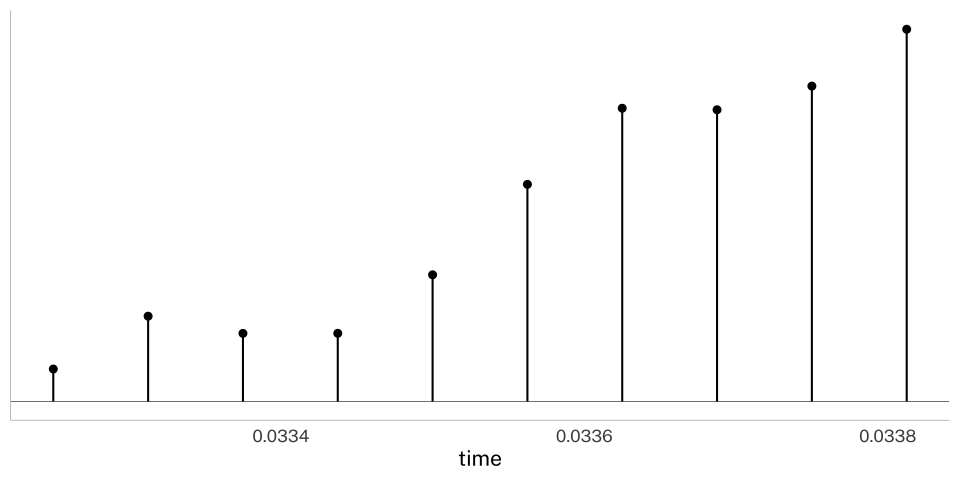
Acoustic Analysis
It looks like we need 90 samples or \(\frac{90}{16000}\) = 0.005625 seconds to get a single period.
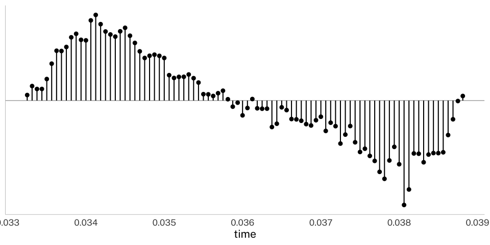
Acoustic Analysis
Analyses of frequency can only be done over spans of time. We always need to choose an analysis window size.
Acoustic Analysis
The second period isn’t exactly the same.
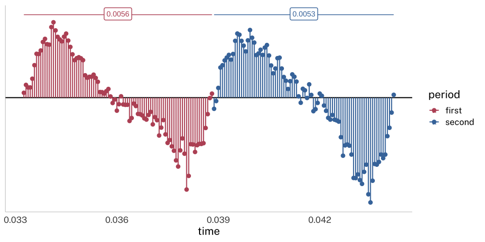
Acoustic Analysis
| period | samples | duration (s) | frequency (Hz) |
|---|---|---|---|
| first | 90 | 0.00562 | 178 |
| second | 86 | 0.00537 | 186 |
Acoustic Analysis
What if we expanded the analysis window to the entire vowel for greater accuracy?
| time (s) | frequency (Hz) |
|---|---|
| 0.447 | 176 |
But… the way F0 changed over the course of the vowel has been lost.
Acoustic Analysis
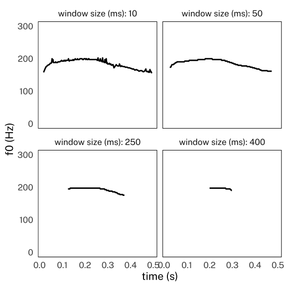
Acoustic Analysis
These same trade off between time and frequency needs to be made with spectrograms as well.
Acoustic Analysis
Narrow band spectrogram = wide analysis window
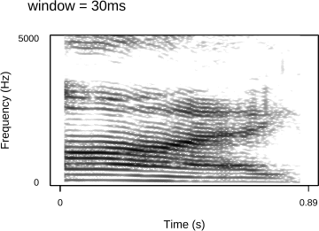
Acoustic Analysis
Wide band spectrogram = narrow window
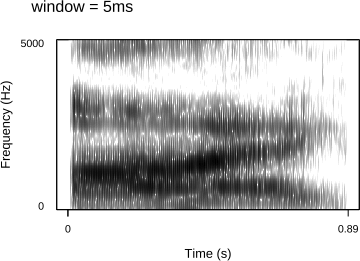